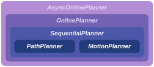

Overview
MPSV (Motion Planner for Surface Vehicles) solves motion planning problems for fully actuated surface vehicles with non-linear dynamics in an environment with non-convex, non-moving obstacles. The method is based on the RRT* algorithm. The overall problem is decomposed into two sequential subproblems: first, a feasible path is searched for; then, a collision-free trajectory is computed based on the path found. An example is shown in the following figure.

Planning Levels
The MPSV API is organized into several planning levels, as shown in the following figure.

PathPlanner
- Finds a path from the initial pose to the final pose.
- Uses RRT* with a fixed number of nodes and supports warm starts.
MotionPlanner
- Finds a trajectory from the initial state and input to the final pose around a given path.
- Uses RRT* with a fixed number of nodes.
- An internal control system based on feedback linearization and full-state feedback generates a dynamically feasible trajectory.
SequentialPlanner
- Combines the path planner and the motion planner in a sequential manner.
- The path found by the path planner is used as guidance for the motion planner.
OnlinePlanner
- Continuously solves sequential planning problems for a future time point.
- Seamlessly merges the new solution trajectory with the previous solution.
AsyncOnlinePlanner
- Runs the online planner in a separate thread.
- Results are obtained via polling or a callback.
Simulink Library
The MPSV Simulink library provides the following blocks:
- PathPlanner — solves the path planning problem.
- AsyncOnlinePlanner — solves the online sequential motion planning problem in a separate thread.
- AutoTune AsyncOnlinePlanner — calculates all tuning parameters for the AsyncOnlinePlanner from the vehicle parameters and one intuitive tuning parameter.
- Select Current Point On Trajectory — selects the current point on a given trajectory for a given time point.
For each planner, dedicated blocks construct the default input, parameter, and output buses; the elements of these buses are documented on the corresponding bus pages. The error codes that can be returned by the planners are documented on the Error Codes page.